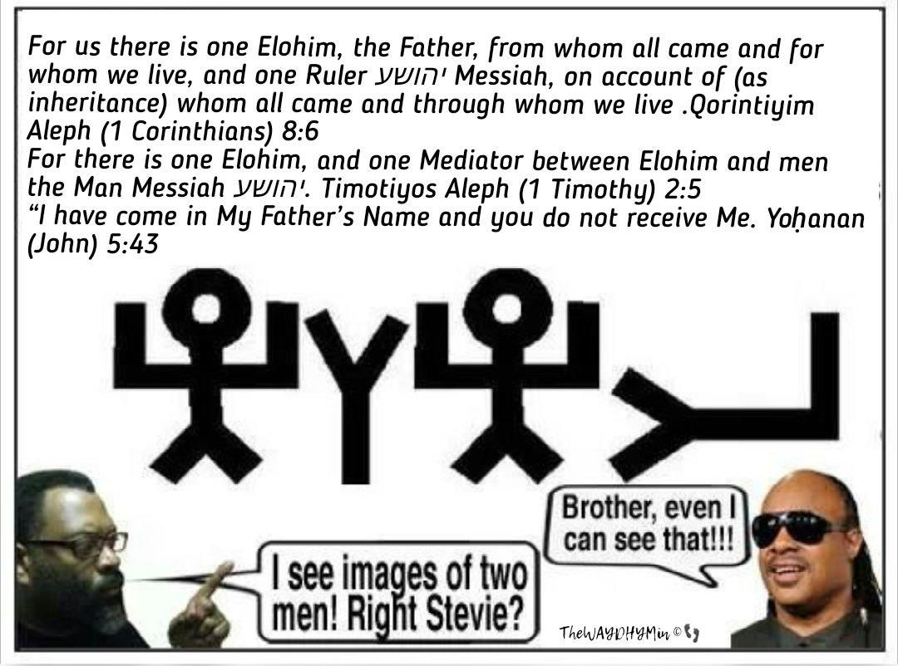

Is Yeshua actually יהוה in the flesh?
If Yeshua is the Elohim of Yisra’el, then who is the Elohim of Yisra’el’s Elohim? Confused? Welcome to the world of Constantine’s mystery.
In the Revelation of Yochanan/John, Yeshua states:
Chazon/Revelation 312“He who overcomes, I shall make him a supporting post in the Dwelling Place of My Elohim, and he shall by no means go out. And I shall write on him the Name of My Elohim and the name of the city of My Elohim, the renewed Yerushalayim, which comes down out of the heaven from My Elohim, and My renewed Name.
Given that this statement has been made by Yeshua HaMashiach, where is the mystery? He has stated four times in one verse of Scripture that He has an Elohim: A God.
So, if Yeshua Messiah is the Elohim of Yisra’el, the Elohim of Scripture, יהוה in the flesh, who, then, does He worship? Who is “MY ELOHIM”? Why are we not worshipping that Elohim instead of the One in Scripture? And just so there can be no mistake or misunderstanding about Yeshua’s meaning in Revelation, we are reminded by him in Yochanan/John that he has an Elohim. Yeshua said to Miryam Magdalene:
Yochanan/John 2017 יהושע said to her, “Do not hold on to Me, for I have not yet ascended to My Father. But go to My brothers and say to them, ‘I am ascending to My Father and your Father, and to My Elohim and your Elohim.’ ”
Again I ask, if Yeshua is the Elohim of Yisra’el, then to whom is the Elohim of Yisra’el ascending?
If one will take the time to actually study the Tanach (Old Testament), they will find the Elohim of Yisra’el repeatedly declaring that He, alone, is Elohim. That there is no other Elohim. That there is no equal to Him, nor is there anyone to compare to Him. Unless the Elohim of the Tanach is a liar, then there is no other Elohim apart from יהוה. Therefore, it is to יהוה that Yeshua is ascending. But if Yeshua is also יהוה, the Elohim of Yisra’el, then he is ascending to Himself. But that doesn’t line up with His statement in Chazon/Revelation 3, wherein he states that he, himself, has an Elohim.
The answer is clear to anyone who cares to set aside what they have been taught by replacement theology and Christianity and accept the FACT that there is One Elohim and He is Singular by nature. That He is an everlasting Elohim
Yeshayahu/Isaiah 4028Did you not know? Have you not heard? The everlasting Elohim, יהוה, the Creator of the ends of the earth, neither faints nor is weary. His understanding is unsearchable.
Yeshayahu/Isaiah 44:8 Do not fear, nor be afraid. Have I not since made you hear, and declared it? You are My witnesses. Is there an Eloah besides Me? There is no other Rock, I know not one.’”
Yeshayahu/Isaiah 44:24 Thus said יהוה, your Redeemer, and He who formed you from the womb, “I am יהוה, doing all, stretching out the heavens all alone, spreading out the earth, with none beside Me”
He is an immortal Elohim.
Timotiyos Aleph/1 Timothy 614But it is said of Elohim: “Until the appearing of Yeshua HaMashiach our Adonai, 15who at the DUE TIME will be revealed BY ELOHIM, the blessed and ONLY RULER OF ALL, the King of Kings and Adonai of Adonai, 16who ALONE IS IMMORTAL, whose home is inaccessible Light, WHOM NO MAN HAS SEEN and NO MAN IS ABLE TO SEE: to HIM be honour and everlasting power. Amein.”
In case you did not understand the nature of death, when one dies, they are officially a mortal being. Yeshua died on the stake. Thus, He is mortal.
Furthermore, to prove my point that Yeshua is NOT the Elohim of Yisra’el, I ask you to consider what Sha’ul/Paul has written to the Corinthians.
Qorintiyim Aleph/1 Corinthians 15:24-26“After that will come the end, when he (Yeshua) hands over the Kingdom to Elohim the Father, having done away with every sovereignty, authority, and power. For he must be King UNTIL he has put all his enemies under his feet. And the last of the enemies to be destroyed is death, for everything is to be put under his feet.”
If Yeshua is the Elohim of Yisra’el, why must He hand the Kingdom over to Himself since it would already be in His possession? This would make Sha’ul’s statement superfluous and an exercise in semantics. Or else, what we are witnessing here is a Lesser Being (Yeshua) fulfilling the work given to him to accomplish by a Superior Being (יהוה Elohim).
When we consider the statement in that light, it becomes clear that we are talking about Two Separate and Distinct Individuals: One who is Immortal and Eternal, One who was mortal and is himself a part of the Creation:
Qolosiyim.Colossians 1
15“He is the Image of the unseen Elohim and the firstborn of all creation.”
Firstborn necessarily involves a beginning, while everlasting involves neither a beginning nor an end.
Qolosiyim/Colossians 1:16-17“For in him were created all things in Heaven and earth: everything visible and everything invisible, thrones, dominations, sovereignties, powers--all things were created through [G1223 – dia - because of] him and for him. Before anything was created, he existed [in יהוה’s Plan, Vision & Purpose] and he holds all things in unity.”
Now, to receive greater clarity on this statement to the Colossians, let us see what further Scripture has to say regarding the Firstborn of Creation:
Mishle/Proverbs 822“יהוה possessed me [H7069 qânâh - to erect, that is, create; by extension to procure, especially by purchase (causatively sell); by implication to own: - attain, buy (-er), teach to keep cattle, get, provoke to jealousy, possess (-or), purchase, recover, redeem, (with a purpose)],The beginning of His way, As the first of His works of old. 23“I was set up ages ago, at the first, Before the earth ever was. 24“When there were no depths I was brought forth [in יהוה's Mind], When there were no springs heavy with water. 25“Before mountains were sunk, Before the hills, I was brought forth [in יהוה's Mind], 26“Before He had made the earth and the fields, Or the first dust of the world. 27“When He prepared the heavens, I was there[in יהוה's Mind] , When He inscribed a circle on the face of the deep, 28“When He set the clouds above, When He made the fountains of the deep strong, 29“When He gave to the sea its law, So that the waters would not transgress His mouth, When He inscribed the foundations of the earth, 30“Then I was beside Him [H681 'êtsel - (in the sense of joining); a side; (as a preposition) near: - at, (hard) by, (from) (beside), near (unto), toward, with.], a master workman, And I was His delight, day by day Rejoicing before Him all the time, 31“Rejoicing in the world, His [יהוה’s] earth; And my delights were with the sons of men.”
Do you see it: The Firstborn of Creation bearing witness of himself as the Word/Plan/Vision of Elohim.
In all of these passages of Scripture there exists a clear differentiation between Elohim and Servant, between Father and Son, between Immortal and mortal. יהוה is the Immortal Elohim. Yeshua is the mortal Firstborn of Creation. יהוה created Yeshua as the Word/Plan/Vision, who was delighted to be with humanity [compare Mishle/Proverbs 8:31 with Yochanan/John 1:9] and who eventually came and dwelled among us [Yochanan/John 1:14. There is no mystery here, apart from the waters muddied by human doctrine and the desire to apply Western religious philosophy to the Hebraic Shema.
Who is the Messiah in relationship to יהוה? Yeshayahu/Isaiah reveals Elohim’s word concerning this subject:
Yeshayahu/ Isaiah 42:1“Behold, here is My Servant in whom I am well pleased, My Chosen One in whom My soul delights. I have endowed Him with My Spirit that He may deliver justice to the nations.”
If Messiah was Elohim, how could He be endowed once again with a Spirit he already possessed? But Elohim has called that Spirit “My Spirit” and not “Our Spirit.” Notice that יהוה calls The Word/Plan/Vision “My Servant” and not “My Partner,” or “Myself.” Notice also that Elohim calls The Word/Plan/Vision “My Chosen One.” If יהוה Elohim and The Word/Plan/Vision were One and the same, the identification of The Word/Plan/Vision as chosen would be improper and redundant. And surely we are not expected to believe that Elohim endowed Himself with anything, for He is already perfect. With what would a Perfect Being endow Himself to make Himself more perfect?
Additionally, how does a Servant claim equality with the Master? Messiah explains the unlikelihood of this in:
Mattithyahu/Matthew 1024“The disciple is not superior to his teacher, nor the servant to his master.”
According to Scriptural law and precedence set by the Messiah, a servant is not equal to the Master. And concerning equality, Yeshua said to His disciples in:
Yochanan/John 1514“You are My friends if you do what I command you. 15I shall not call you servants anymore, because a servant does not know his master's business.”
If Yahushua is Elohim's Servant as both he and Yeshayahu have demonstrated, and Yeshua has stated that the Servant does not know the Master's business, then how can the Servant Messiah be Elohim, for if He was Elohim, He would absolutely know the business of the Father, for the Two would be One in the same, as Trinity insists.
Yeshayahu/Isaiah 42
1“See, My Servant whom I uphold, My Chosen One My being has delighted in! I have put My Spirit upon Him; He brings forth right ruling to the nations. 2 “He does not cry out, nor lifts up His voice, nor causes His voice to be heard in the street. 3 “A crushed reed He does not break, and smoking flax He does not quench. He brings forth right ruling in accordance with truth. 4 “He does not become weak or crushed until He has established right ruling in the earth. And the coastlands wait for His Torah.”
Mattithyahu/Matthew 1218“See, My Servant whom I have chosen, My Beloved in whom My being did delight. I shall put My Spirit upon Him, and He shall declare right-ruling to the nations. 19“He shall not strive nor cry out, nor shall anyone hear His voice in the streets. 20“A crushed reed He shall not break, and smoking flax He shall not quench, till He brings forth right-ruling forever. 21“And the nations shall trust in His Name.”
To further illustrate that the Servant (Son) is unequal to the Master (Father), Yahushua has declared in Mattithyahu/Matthew, concerning the day of His own return:
Mattithyahu/Matthew 24
36“But as for that day and hour, nobody knows it, neither the angels of heaven, nor the Son, no one but the Father only.”
So, if the TWO are equal in all things, as Trinity professes, then how can the Father know a thing concerning the Son that even the Son does not know? So, to reiterate:
Yochanan/John 1316“I tell you most solemnly, no servant is greater than his master, no messenger greater than the one who sent him.”
Who then is the Messiah in relationship to the Word/Plan/Vision? According to the unknown author in Qolosiyim/Colossians 1:15, Messiah is the firstborn of all creation. The Word/Plan/Vision testifies of himself in Mishle/Proverbs 8:23 -31, as I believe I pointed out earlier.
The Word/Plan/Vision has stated that Yahushua came to be created in יהוה Mind at the beginning. Of that there can be no doubt. However, Elohim is from before the beginning, since He has always existed and was not created. Here is a clear separation between the Father and the Son. The Word/Plan/Vision was created. Elohim was not. Elohim was present before the original act of creation commenced [see Bereshit/Genesis 1:2], but the Word/Plan/Vision was not, because it was The Word/Plan Vision that Father created [see Bereshit/Genesis 1:3; Tehellim/Psalm 119:105,130; Mishle/Proverbs 8:22-23; Yochanan/John 1:1-3,9,14]. The Word/Plan/Vision was the absolute First of all of Elohim’s creations. And then, once The Word/Plan/Vision came into existence, Elohim created everything else BECAUSE of The Word/Plan/Vison and for The Word [see Qolosiyim /Colossians 1:15-17].
Christianity proudly points to the Gospel of Yochanan/John 1: 1-4 as the evidence it requires to bear Trinity before mankind. And in every English translation I have ever seen, it says: “In the beginning was the Word; the Word was with God and the Word was God.”
In order to fully appreciate the Apostle’s perspective, we have to approach this passage of Scripture with an understanding of the Targum Yerushalmi. A Targum is a translation or paraphrase of parts of the Hebrew Scriptures written in the Aramaic language of Judea. The Targum Yerushalmi is the Torah from Yisra’el, as opposed to the Targum Onkelos, also known as the Eastern Babylonian Targum, written at the end of the Eighth Century during the time of the Crusades. According to the Targum Yerushalmi, Bereshit/Genesis 1:27 should read like this:
“And the Memra of Elohim created man in Elohim’s image.”
Thus, The Word/Plan/Vision of Elohim created man in Elohim’s Image. Yochanan/John, understanding the Targum Yerushalmi, and with that translation in mind, said of The Word/Plan/Vision: “All things were made through [G1223 dia-because of] Him.” [Yochanan/John 1:3] The author of Qolosiyim/Colossians concurs with Yochanan/John’s statement when he wrote: “All things were created through [G1223 dia-because of] Him and for Him.” [Qolosiyim/Colossians 1:16]
The vast and overwhelming majority of Christianity is completely unaware that Yeshua’s disciples are referring to the Word (Memra/Plan/Vision) from ancient paraphrases of Hebrew Scripture, which is The Tanach, or Old Testament. Thus, understanding only from a Western perspective and from English translations, they have failed to perceive the nuance of Yochanan/John’s words in the context of his understanding of exactly Who and What Memra is. When Yochanan/John spoke of Memra (Logos in Greek) he made an important distinction between The Word/Plan/Vision of יהוה and יהוה Himself. The extant (still existing) Greek manuscripts of Yochanan/John read:
Yochanan/John 11“A Logos was protos ton Theon.”
Thus, A Word/Plan/Vision was with “The” God. This distinguishes The Word /Plan/Vision from Elohim. Contradictions such as this one occurred when the original Greek version of the New Testament was misunderstood and mistranslated into English, and particularly into the King James Version. Such contradictory mistranslations are deliberately slanted toward legitimizing Trinity though no such intention originated with the Apostle.
As you ponder upon those subtle differences, I will ask one question. If Yahushua, in short Yeshua, is Elohim, then why would we have to be told that he was with Elohim in the beginning? If He were truly Elohim, wouldn’t He have been there BEFORE the beginning, seeing as He would be Everlasting (eternal)? And how can He be Himself and with Himself at the same time? But the use of the term “a god” denotes great power and is not uncommon in its usage throughout scripture. In Yochanan/John Messiah said:
Yochanan/John 1034 יהושע answered them, “Is it not written in your own Torah, ‘I said, “You are elohim” ’? 35“If He called them elohim, to whom the word of
Elohim came – and it is impossible for the Scripture to be broken – 36 do you say of Him whom the Father set apart and sent into the world, ‘You are blaspheming,’ because I said, ‘I am the Son of Elohim’?
Having then made this distinction between Memra/ Logos/ The Word/Plan/Vision versus Elohim/ Theon/ God, Yochanan/John refers to Logos, not as Theon, but only as theos (a god) without the definite article “the.” Elohim is The God; Memra is a god. יהוה is Elohim; Yeshua is Memra/god/Plan/Vision. Now this is critical to your understanding: In Scripture and other Hebrew sources, words that are translated “god” (elohim) such as El or elohim refer to an authority or power and not only to יהוה. For instance, El is the plural form of the Hebrew word eloah, and eloah does not refer to יהוה. For example: Mosheh (Moses) is twice referred to as “an elohim” by יהוה Himself. [see Shemoth/Exodus 4:6 & 7:1] Likewise, the Messiah is the Prophet like Mosheh. [see Devarim/Deuteronomy 18:15-19 & Ma’asei/Acts 3:22]
Messiah was anointed by יהוה, in keeping with Scriptural precedence of the Greater anointing the lesser. Tehillim/Psalm 45:7-8 speaks of this in relation to the Messiah. Shemoth/Exodus 30:30 speaks of Mosheh anointing Aharon and his sons. Shemu’el Aleph/1 Samuel 10:1 describes Shemu’el/Samuel the Prophet anointing Sha’ul the king just as Shemu’el Aleph /1 Samuel 16:13 reveals Shemue’l/Samuel anointing David. Melakim/1 Kings 1:34 reveals Nathan the Prophet anointing Solomon king of Yisra’el.
Furthermore, in regards to Messiah’s use of the word “consecrate” in reference to himself in Yochanan/John 10:34-36, to consecrate is to set someone or something apart so as to make it Qodesh (Holy; to cause something to be clean or set apart). Thus, יהוה devoted The Word/Plan/Vision to His Qodesh cause of salvation for all of Yisra’el. And Yisra’el consists of those called the natural born seed of Avraham as well as any gentile who comes into the Covenant Yisra’el made with יהוה [see Shemoth/Exodus 12:37-38 & 19:5-6; Ruth 1:4 & 16; Rom. 11:16-24].
As יהוה’s intrinsic nature is already Qodesh, He had no reason to consecrate Himself. Given that evidence, why then would Elohim have anointed Himself? In a likewise manner, Messiah, the Anointed Servant of Elohim, proclaims that He, the Son, was anointed by the Father, who is greater than He is. [see Yochanan/John 14: 28]
Luqas/Luke 418“The Spirit of Adonai has been given to Me, for He has anointed Me.”
If Messiah was Elohim, and They are equal as Trinity maintains, how is it that the Father could give the Son something which already belonged to Him; namely, His Spirit?
Returning to the matter of “The God and a god”; they are clearly two separate entities. The God is, of course, יהוה, The Creator, the Father, the Master to Messiah's Servant. The term "gods" has been used in many ways in Scripture as I stated previously. This statement reveals that prophets and others of equal stature were called "gods' by ‘The God.’
The title “god” was given to Messiah [see Tehillim/Psalm 8: 5-6; Yeshayahu/Isaiah 9: 5]; to leaders and judges [see Tehillim/Psalm 58: 1]; to Mosheh [see Shemoth/Exodus 4: 16; 7: 1]; to the ghost of Shemu’el/Samuel [see Shemu’el Aleph/1 Samuel 28: 13]; and to the house of David [see Zekaryah/Zechariah 12: 8] Thus, Yochanan/John has made a clear distinction in the Greek translation between The God, Who is to be worshiped, and a god, who has been addressed directly by The God; The consecrated and anointed Word/Plan/Vision of God; the firstborn of all creation, through whom and by whom all things came into being. The Word/Plan/Vision, who was by “The” God's side in the beginning of “The” God's purpose.
I don't see Trinity, or even duality. I see יהוה Elohim as the Architect, with His Anointed Servant as the Engineer. They are of one purpose, as in Messiah stating
Yochanan/John 10
30“I and My Father are one”
But certainly not as co-equals. Remember, only Elohim is immortal. All elohim, including Yeshua, are mortal [see Tehillim/Psalm 82:5-7]. Heavenly and earthly powers alike are called elohim, including angels and even the idols of Gentiles. Nevertheless, there is only One Ultimate Power:
Melakim Aleph/1 Kings 1839“יהוה is Elohim, יהוה is Elohim!”
Nowhere has Yochanan/John intimated that יהוה, Himself, became flesh like Zeus or some other pagan god. And in addition to all of this, I might add these thoughts concerning Messiah, the Son of Man, and יהוה, a Spirit Person.
Bemidbar/Numbers 23: 19“Elohim is not a man that He should tell lies.”
The Servant became flesh while the Master did not. Elohim is not a man, yet the Son was. This is Key to salvation.
Yochanan Aleph/1John 41Beloved ones, do not believe every spirit, but prove the spirits, whether they are of Elohim, because many false prophets have gone out into the world. 2By this you know the Spirit of Elohim: Every spirit that confesses that יהושע Messiah has come in the flesh is of Elohim, 3and every spirit that does not confess that יהושע Messiah has come in the flesh is not of Elohim. And this is the spirit of the anti-messiah which you heard is coming, and now is already in the world.
For יהוה to become a man after Scripture declared otherwise would make Him a liar. But Elohim is not a liar. Just as Elohim was never a part of the creation, being as he is, set apart. But the Word/Plan/Vision could become a Man because The Word/Plan/Vision is a part of creation, being as He is, the Firstborn of all creation. In fact, The Word/Plan/Vision is the Key Element of all Creation; the Keystone of this and any other universe.
For a study on Yochanan/John 1 click here https://thewaydhymin-eng.github.io/Aliyah/studies/was-yah…
Messiah was a Man and as such, He was tempted in the desert by HaSatan.
Ya’aqov/James 113“...Elohim cannot be tempted to do anything wrong…”
If Yeshua were Elohim, how is it that Elohim could be tempted? Additionally, Yeshua is the Heavenly Man who mediates between יהוה and humanity [see
Tehillim/Psalm 80:17; Qrintiyim Aleph/1 Corinthians 15:47-49; Timotiyos Aleph/1 Timothy 2:5]. If Yahushua is Elohim, of what need is a Mediator when we would be speaking directly to Elohim already?
"For it is unbecoming beyond measure that on this holiest of festivals (Easter) we should follow the customs of the Hebrews. Henceforth let us have nothing in common with this odious people; our Savior has shown us another path. It would indeed be absurd if the Hebrews were able to boast that we are not in a position to celebrate the Passover without the aid of their rules. We ought not, therefore, to have anything in common with the Hebrews." ~The Council of Nicea rejects Hebraic roots, rejects Turah
Chazon/Rev. 18:4-5"And I heard another voice from the shamayim saying, Come out of her, My people, lest you share in her sins, and lest you receive of her plagues. For her sins have piled up to reach the shamayim, and יהוה has remembered her unrighteousnesses."
The true beginning of the religion known today as Christianity is shrouded in secular and pagan thought and tradition. The historical beginnings of this religion is all but “hidden” and kept silent in today’s churches.
All we need to know concerning the “new” religion that evolved at the hands of the Roman Emperor Constantine and formalized at the Council of Nicaea we can learn from early scholars of the day and Catholic Church documents that live on historically. These all openly admit that the “religion” was neither “new” nor “strange” to the pagans of their day and that the only thing “new” about it was the name of the new “god” they created. This new god’s name was Jesus H. Christ (Jesus (Hesus) H. (Horus) Christ (Krishna)) or I.H.S. in Latin.
Every Christian Church today from the Roman Catholic Church to every last Protestant denomination expresses its faith in what is called The Nicene Creed. This is the resulting creed that came out of the first council at Nicaea where Christianity and its fundamental doctrines of sun worship were formulated by Constantine to unite his kingdom through syncretism.
Constantine had a political problem that required a religious solution. He never had a "conversion" to serve יהוה through יהושע ha’Mashiah (the Anointed). This "political problem" required he create a “god” that those who worshipped
Julius would accept that would be acceptable to the factions in the Eastern and Orient who worshipped Krishna. All of these gods: Jove, Jupiter, Salenus, Baal, Thor, Gade, Apollo, Juno, Aries, Taurus, Minerva, Rhets, Mithra, Theo, Fragapatti, Atys, Durga, Indra, Neptune, Vulcan, Kriste, Agni, Croesus, Pelides, Huit, Hermes, Thulis, Thammus, Eguptus, Iao, Aph, Saturn, Gitchens, Minos, Maximo, Hecla and Phernes and many more were narrowed down from literally hundreds down to 53 then after much debate down to only 5 through balloting: Caesar, Krishna, Mithra, Horus and Zeus (Historia Ecclesiastica, Eusebius, c. 325). Therefore, we were given the god Jesus H. Christ literally by a group of pagan priests who cast their "vote" for their pagan god by ballot!
To make a very long and detailed story short, the council could not come to a decision on just one god they all could accept, so Constantine exercised his authority as Emperor and high priest to consolidate the 3 primary gods that would effectively represent the Greek masses and the Eastern and the Oriental religions of the Roman Empire. Every one of these so called “gods” are nothing more than later incarnations of the Babylonian Religion whose saviour was Tammuz the second member of the Babylonian Trinity and son/sun of “God.” Constantine chose the following “gods” to unite his empire:
To placate the powerful British factions, he chose the great Druid god which was the sun god Hesus/Zeus (an incarnation of Nimrod/Tammuz).
To placate the faction from Egypt he chose the Assyrian sun god Horus (an incarnation of Nimrod/Tammuz).
To placate the Eastern/Oriental factions he chose the Eastern Saviour-god, Krishna (Krishna is Sanskrit for Christ) (an incarnation of Nimrod/Tammuz).
These three main sun gods/saviours were then united into one composite deity called Hesus Horus Krishna which later became known in its English derived name as Jesus H. Christ. Satisfying the Julius, Esu, Horus, and Krishna faithful who made up the vast majority of his empire. Constantine now had a “god” for his new religion which was not new at all but the rebirth of Babylonian sun worship. A “god” easily acceptable by all throughout his realm (except true believers of יהושע whom he had killed in the inquisition).
Yirmeyahu/Jeremiah 516 "Flee from the midst of Babel, and let each one save his life! Do not be cut off in her crookedness, for this is the time of the vengeance of יהוה, the recompense He is repaying her!”